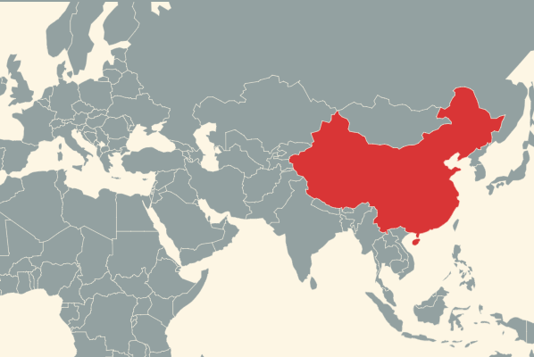
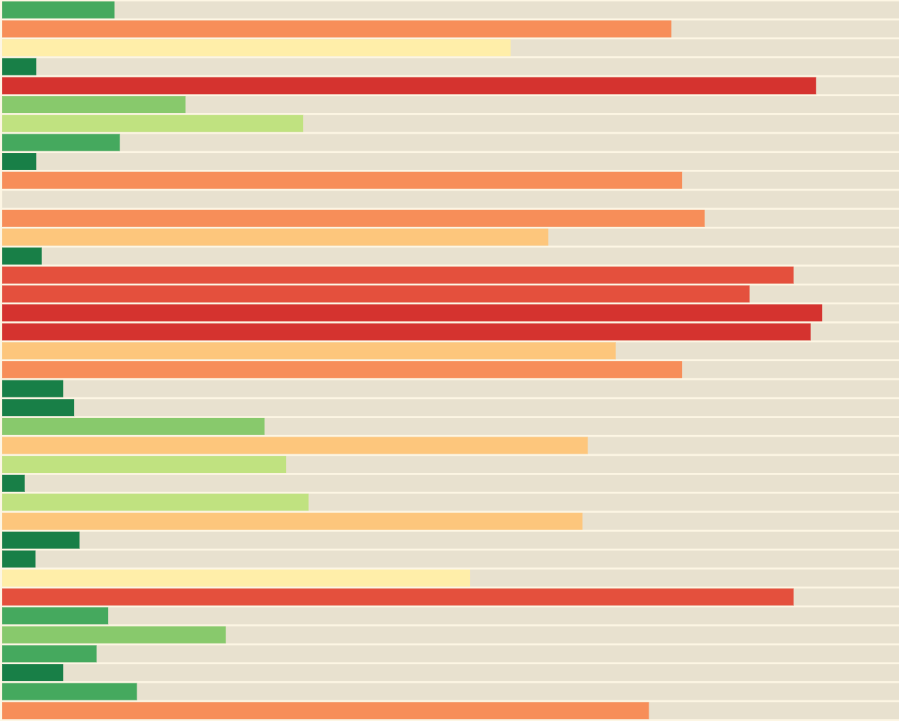

Repression
Summer 2017
This projects visualizes episodes of political repression since World War II. Details are available in it's GitHub repository.

Mass Killings
Summer 2017
This project visualizes the risks of state-led mass killings around the world.